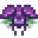

Bicho armado (peligroso)
| Bicho armado (peligroso) | |
 | |
| Información | |
| Aparece en: | Caverna Calavera Peligrosa |
| Niveles: | Todos |
| Matable: | Si |
| PV base: | 250 |
| Daño base: | 20-27 |
| Defensa base: | 0 |
| Velocidad: | 2 |
| Puntos de XP: | 1 |
| Variaciones: | |
| Botín: |
Si se alcanzó el fondo de las minas:
|
El Bicho armado (peligroso) es un enemigo que se encuentra en la Caverna Calavera durante la misión Invasión de la Caverna Calavera. Son invencibles excepto cuando son atacados por un arma con el encantamiento Matabichos.
Comportamiento
Se comportan de forma idéntica a su versión más débil, el bicho armado. Vuelan de un lado a otro en línea recta vertical entre paredes u objetos. No son agresivos, pero causarán daño al jugador si se tocan de frente.
Estrategia
Solo se pueden matar con el encantamiento Matabichos y, de lo contrario, se deben dejar solos. Eliminar obstáculos en su trayectoria de vuelo, como piedras, puede darles más espacio para moverse, lo que también le da al jugador más tiempo para evitarlos.
Historial
- 1.5: Introducido